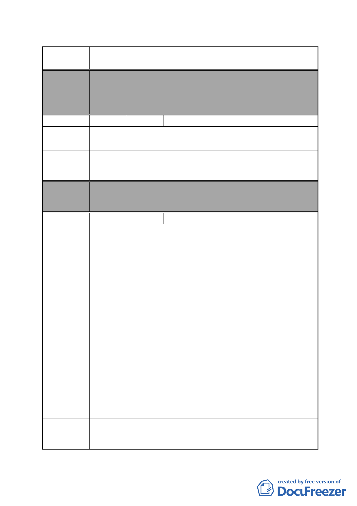

案 名 變更臺北市南港區鐵路地下化沿線土地主要計畫案
委員會
決議
編號
陳情理由
建議辦法
本案除文字誤繕應再作修正外，其餘依市府本次會議所送修
正計畫書內容通過。
（市府本次會議所送修正計畫書，業將陳情地點剔除於市地
重劃範圍）
12 陳情人 葉立祥
本住戶為向陽路開通時之受害戶，土地被徵收過。如今再開
發徵收，將無處可去，住戶未蒙其利先受其害
靠向陽路邊之民宅，原地保留不另行拆遷。
委員會 本案除文字誤繕應再作修正外，其餘依市府本次會議所送修
決議 正計畫書內容通過。
編號
陳情理由
建議辦法
13 陳情人 闕樹林
先前昆陽街曾經討論過要拓寬事宜，是因為當時昆陽街有平
交道阻礙交通造成不便，如今昆陽街在鐵路地下化之後，塞
車的狀況已不復見，因此昆陽街實沒有拓寬之必要性。
在未來捷運板南線延伸到南港車站之後，至南港展覽館昆陽
站、音樂中心或搭乘三鐵之人車潮將順移，昆陽站已喪失轉
運功能，屆時人、車流量將會比現況減少。而未來忠孝東路
跟南港路三段之間，除了有２０公尺寬的東新街、昆陽街，
還會增加３條道路，已足夠人車使用。因此昆陽街實沒有拓
寬之必要性。
本次計畫規劃上是有問題的，如果要拓寬昆陽街西側，道路
根本就切不直，越靠近捷運，道路反而越窄。參照本次計畫
的計畫圖而實際到現場可以發現，拓寬昆陽街西側整排是到
昆陽街１１２號為止，所以順著１５公尺寬昆陽街走路或開
車，快要到捷運站時，道路反而突然縮小，會撞到昆陽街１
１６號跟忠孝東路４４９號，就算連這兩間都退５公尺，那
麼接下來仍會撞到捷運的大排氣口。所以若是依照本次計畫
拓寬昆陽街西側，昆陽街將變成忽胖忽瘦的道路，根本無法
得到道路拓寬的效益。
建議昆陽街不拓寬。
- 26 -